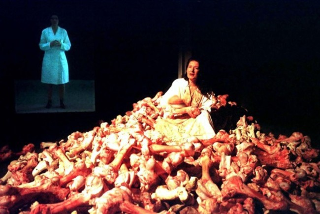
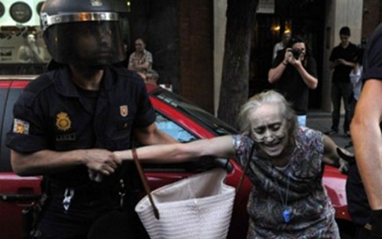
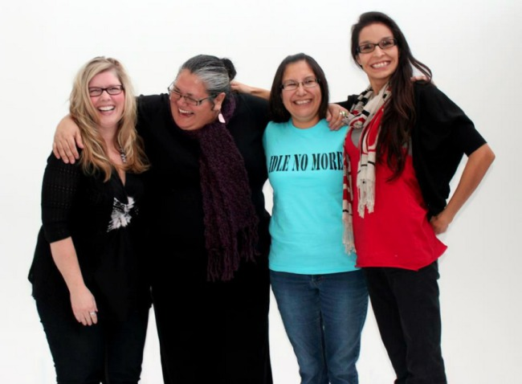

Offline Slaughter and Rats Online
Introduction
Hello,
I regret I could not come and participate in person at the Unlike Us #3 conference. When Seda proposed me to release a video, I could not get my mind to work on it. That's because I come from a world of bits and clear text over a dark background.
When I was 14 years old, I decided to understand why everybody around me was so drawn to watch TV, when the favorite occupation for my eyeballs was to pursue little black shapes on paper, that were forming words, and sentences, and paragraphs and pages, one after the other, step by step, unfolding meaning I could never have thought of.
What I unveiled over the 24 hours period I spent doing nothing else than watching TV, only confirmed my intuition: the world is engineered to deprive us of our humanity, to squeeze us of the invisible community of the multitude in our own minds, to reduce us to one, single, visible entity that conforms to the perception of a theoretical model of "ME": the Homo Economicus, disaffected rational "being" operating in the virtual world of perfect free markets.
When you watch TV over a long period of time, uninterrupted, you realize that it's nothing but a seclusive schedule, with hours split into regular chunks by highly targeted advertising: first come retired people, to consume from the comfort of their homes (they don't sleep much), then the low-class hard worker, who needs to wake up early and work more to earn barely enough; the children, to eat a cartoon for breakfast, wasting the precious first hour of a fresh brain on enslaving habits and insidious hyperactive-consumerist propaganda… The rest of morning is then dedicated to the housewife, because she deserves it. Etc. all day long, one can witness the very fabric of society without leaving their little square. Over the years, the dumbness of propaganda only grew, to match the larger sizes of the displays, and to hide the ever bigger lies of the politicians, and abusers of all sorts.
Offline Slaughter and Rats Online

Figure 1: Marina Abramovic's Balkan Baroque won the Golden Lion at Venice Art Biennale in 1997 (who cares?)
I cannot be with you for several reasons that I will briefly describe. One of them relates to the panel discussion last year about the lack of financial support for alternate development. More projects have sprouted since, and we did a lot of work, as you will see, but still with a zero-budget line; last August, I had the opportunity to speak at FISL13, in Porto Alegre, where I exposed my vision of a cooperative civilization; as I wanted for a while to work in Latin America, I decided to "miss" my plane back to Europe; finally, I recalled that there is a law in the Netherlands that requires people to show their national identity record in order to participate at an event like Unlike Us–last year, I could avoid it by claiming my identity could be verified with my GPG key, and I was kindly accepted, against the rule, for the sake of privacy, the conference topic.
I'm stubborn. I never understood, nor accepted, that I could not fly anywhere I like, as a bird, nor sneak in any ship like a rat. As members of the most intelligent species known by science on Earth, we enjoy less rights than birds and rats. I like rats. They were gifted by evolution the prohibition of idleness: if a rat would stop gnawing, its teeth would grow in a circle to its throat, eventually killing it. Unlike us humans, whose idleness is well on the way to mass-killing us.
When idling on Facebook, and similar, er, "services", people not only waste their own time, but they're actively helping ill-intended organizations in shaping a world where people like me, who refuse surveillance, will become easy targets: when everybody else blinks like a Christmas tree at the airport, not wearing an electronic signature will become suspicious. But that is science fiction, and may not even happen–after all, what everyone else seems to consider normal, I often see it as surveillance, and I might just be a paranoid freak.
What we don't see, what we don't hear, what is not within the reach of our perception does not exist, and we can live happily idling ever after. Meanwhile, in Burma, the Rohingya people are being persecuted with extreme intensity. Alarming reports mention an absolute blackout on media technology, from heavily restricted Internet access, to torturing and killing people in possession of cameras or telephones. If it's not visible, it does not exist. 1, 2
These tactics of blackout have seen a surge in the last few years, and especially in the last year, with frontal attacks on basic rights in many countries, including and foremost in the United States of America, "Land of the Free, Home of the Brave", where freedom of speech has been eroding dramatically, and the right for a fair trial is being replaced by preventive incarceration, and targeted drone assassinations on Presidential order; the United Kingdom also started removing UK citizenship to suspects of terrorism, so that they can follow suit and drone them down.
Indeed, when we're considering replacing Facebook and the like of them, we're not simply talking about lolcats, college parties, or family albums: we're talking about safeguarding fundamental Human Rights against a pervasive surveillance system that allows dictatorships and corporate-controlled corruption-ridden governments alike, to target their employees–sorry: their citizens, according to their paranoia-of-the-day, at will, without any respect whatsoever for democracy or the rule of law. 3
It's not enough to have the Internet declared a Human Right by the United Nations: that must be enforced, like any law. It's not enough to have freedom written in the Constitution: it has to be defended against more incoming attacks, with more intensity. It's not enough to crave the latest technology: it has to be designed with freedom and privacy in mind, invented with a purpose. Whose purpose it is must not be left to the Man in the Middle: it must be chosen by those who will use that technology, otherwise the technology will end up using us.
On Sunday, there will be a hackathon where the Briar developers and others will look into ZRTP, a protocol used in the transmission of encrypted voice over the Internet. We need that kind of technology, not to hide our misdeeds, but our misfits, our difference where it can save our lives, our friends' differences when it can save theirs. Social networking today, and I'm talking about everyday life, is threatened by interests conflicting with life itself. It is not just a question of communications or technology: it's affecting how we learn and educate children, how we think and share knowledge, art and culture, how we feed and clothe ourselves, how we love each other, and how we look away from each other.

Figure 2: Police officers secure a dangerous whistleblower threatening peace in the public space.
If we are to continue as a species on this planet, we are required to bring a halt to the folly of these global systems that deny freedom, deny humanity, deny life itself; we are required to decentralize power everywhere possible, and make abusers accountable for their crimes. It's not a game, and there's no opt-out option. It's happening every day, everywhere, and there's no going back. We can only choose to survive and thrive as a species, or choose to idle until the end. This decision cannot be delegated to anyone, via a sporadic vote influenced by corrupted mass-media, nor by economic laissez-faire–we've seen where the money goes. It is every single person's responsibility to act or to idle: we're all victims of this complex movement of globalization, and we're all perpetrators; idling is accepting the responsibility of letting ugliness rule the world.
But there is some tremendous power we can invoke against the sapping power of erosion: that of evolution. Evolution tells us that nothing is written yet, and everything is a matter of interaction. Let's make it determined and soft like a river, and all of us drops can slowly and surely reach the ocean, a complex and heterogeneous diversity of life.
Thank you.
Post-Scriptum
That may sound paranoid and pessimistic, but indeed it's realist and optimistic. Very optimistic even, as others have already given up, declaring privacy dead. 4 For my part, I think we're still playing on a political ground, and there's still hope.

Figure 3: Unacceptable terrorist display of pornographic propaganda.
I also see an analogy between the disappearance of gods, from multitudes to one, and the disappearance of the enemies, from many "others" to the single invisible foe of terrorism. When that one disappears, the military powers will have no choice but turn themselves–that is: their citizens, us–into the ultimate enemy. It's already happening. But it's not too late–Hollywood is very good at showing us the paroxysm of the last 5 minutes, it's "money time".
If there would be a background music for that message, so that hyper-exposed brains in the audience can cope with the lack of video and still think properly, that would be Fiona Apple's cover of John Lennon's "Across the Universe", to remind us that the impotence we may feel facing a pervasive self-destructing social pressure is mainly issued by our own self-generated dismay. No Messiah is coming to save us, unless one can find it within her own heart.
Footnotes:
Who could have thought Buddhism and racism could work together? See also this endless list of related links
Bruce Schneier ended his recent column on CNN writing "Welcome to an Internet without privacy, and we've ended up here with hardly a fight."